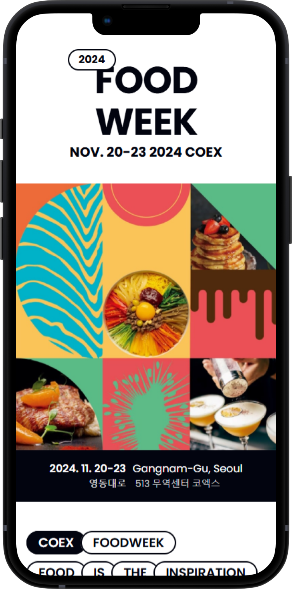
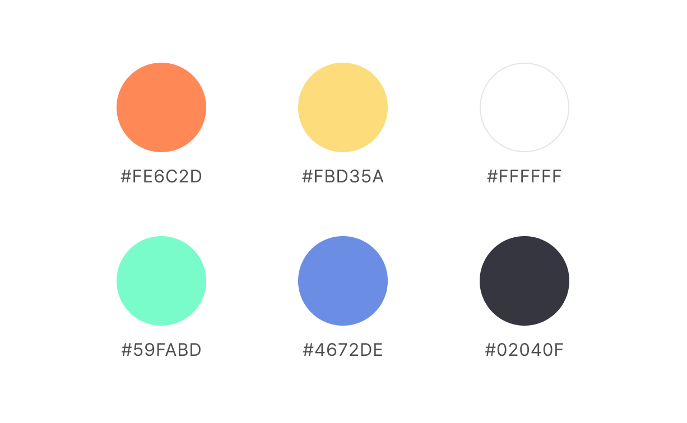
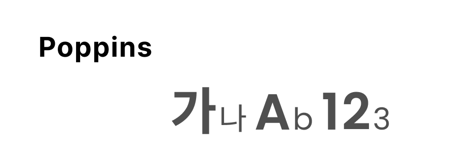
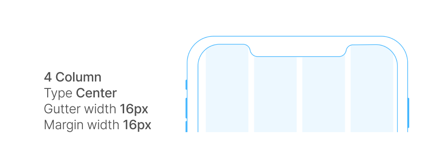
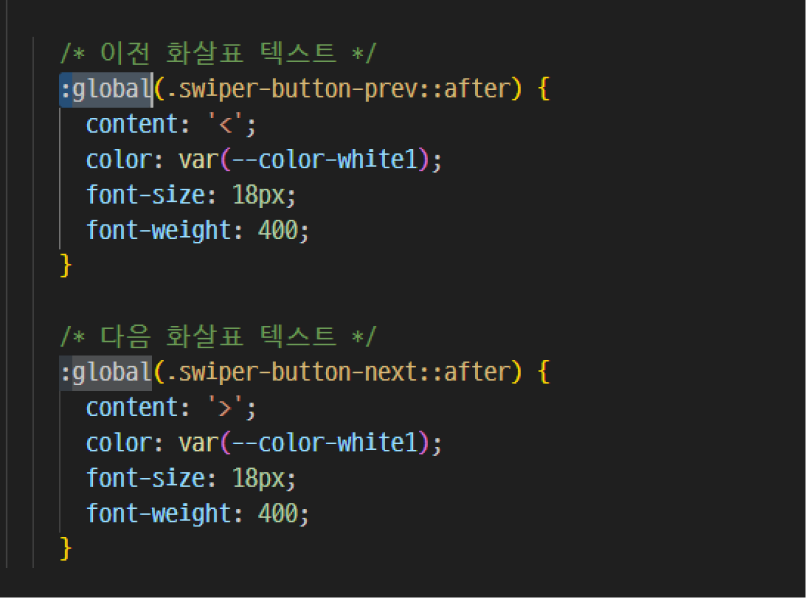
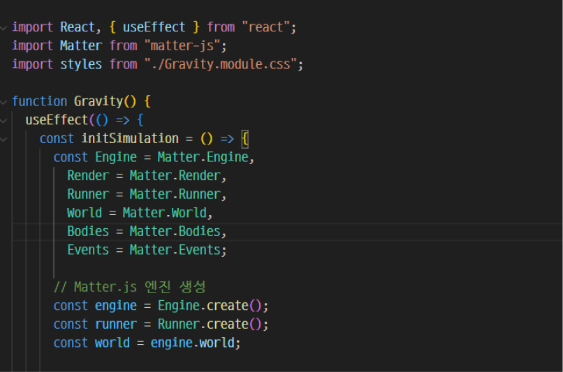
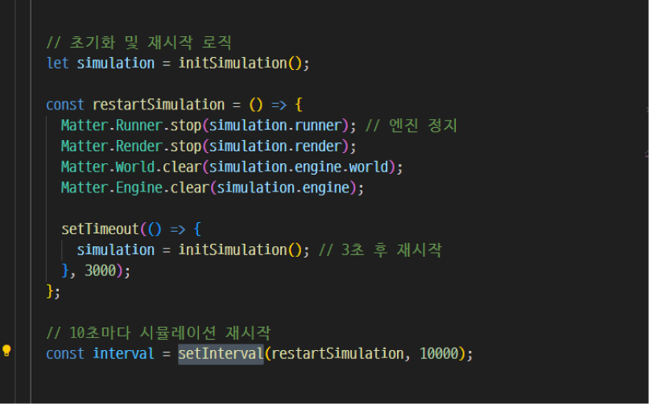

-
SPA Design
Foodweek
24.12 I Individual Project
#React #Swiper #Matter.js
-

Goal
Project Goal
- 푸드위크 고유 콘텐츠에 집중할 수 있는 웹사이트를 구현
- UI 컴포넌트 기반의 리액트 스타일 사용 능력 향상
- 가상 DOM, JSX 문법, 컴포넌트 기반 구조의 이해와 함께 CSS Module 활용 능력 향상
Publishing
Publishing
- 재사용 가능한 컴포넌트 기반 설계
- useState와 useEffect를 활용한 자동 슬라이더 구현
- Matter.js, Swiper.js 활용한 동적이고 직관적인 콘텐츠 구현
- CSS Modules을 활용한 컴포넌트 기반의 독립적이고 효율적인 스타일링구현
Style Guide
-
UI Vision
Taste the Story: 푸드위크의 정체성과 여정을 한눈에
-
Keywords
-
선명한
컬러와 대비를 활용한
정보 전달력 극대화 -
심플한
콘텐츠에 집중할 수 있는
사용자 경험 제공 -
풍성한
다양한 콘텐츠와 정보 제공으로
사용자 만족도 향상
-
-
Color Palette
 -
-
Typography
 -
Layout

-
Resolution
-
Issue
스와이퍼 커스텀, 왜 안될까?
- 모듈 방식으로 Swiper.js를 사용하던 중, 버튼을 커스터마이징하려 했으나, Swiper의 기본 스타일이 우선 적용되어 원하는 디자인을 구현하지 못함
Solution:global 선택자를 활용해보자!
- :global: Swiper 전역 클래스를 덮어쓰고 커스텀 스타일을 적용
- .swiper-button-prev와 .swiper-button-next: Swiper.js의 기본 제공 클래스를 타겟팅
-
Issue
키워드를 위에서 아래로 떨어지게 하려면?
- 기존의 HTML/CSS로는 태그들이 중력에 따라 자연스럽게 아래로 떨어지는 효과를 구현하기 어려웠음
- 태그 요소의 위치와 회전 등을 실시간으로 조정해야 하는데, 이 작업을 순수 JavaScript로 구현하면 복잡도가 높아짐
SolutionMatter.js를 사용해보자!
- Matter.js 물리 엔진을 사용하여 태그 요소를 물리적인 Bodies로 변환하고 중력 적용
- Matter.js의 렌더링 기능과 이벤트 리스너를 활용해 HTML 요소와 물리 Bodies 동기화
-
Issue
자동으로 반복되게 하고 싶은데?
- 새로고침하지 않고도 태그가 주기적으로 초기화되어 반복적으로 떨어지게 만들고 싶음
SolutionsetInterval을 활용해보자!
- setInterval: 10초 간격으로 restartSimulation 호출
- Runner.stop, Render.stop: 시뮬레이션 및 렌더링 정지
- World.clear, Engine.clear: 기존 데이터 제거로 초기화
- setTimeout: 초기화 후 대기 후 새 시뮬레이션 시작
- initSimulation: Matter.js 엔진 초기 상태로 복구 및 재시작
Review
Takeaways
-
코엑스 홈페이지나 티켓팅 사이트에서는 다른 박람회와 연동된 구조로 인해 특정 박람회만의 매력을 느끼기 어려웠습니다. 이러한 한계를 해결하고, 온전히 ‘푸드위크’에 초점을 맞춘 사이트를 구현하며 의미 있는 성과를 얻었다고 생각합니다.
리액트를 활용해 SPA를 처음 구현하며, 컴포넌트 기반 설계의 효율성과 재사용성의 매력을 깊이 느꼈습니다. 과정 중에 많은 시행착오를 겪었지만, 이를 통해 새로운 지식을 습득하고 성장할 수 있었습니다. 앞으로도 최신 기술과 트렌드에 꾸준히 도전하며 발전해 나갈것입니다.